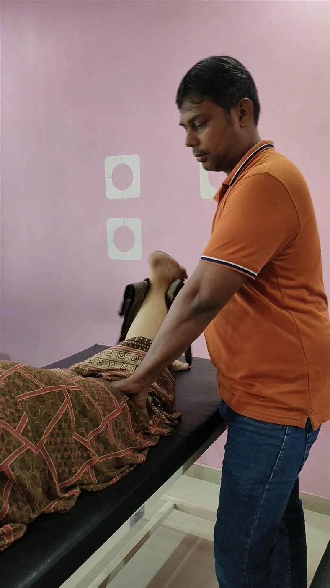
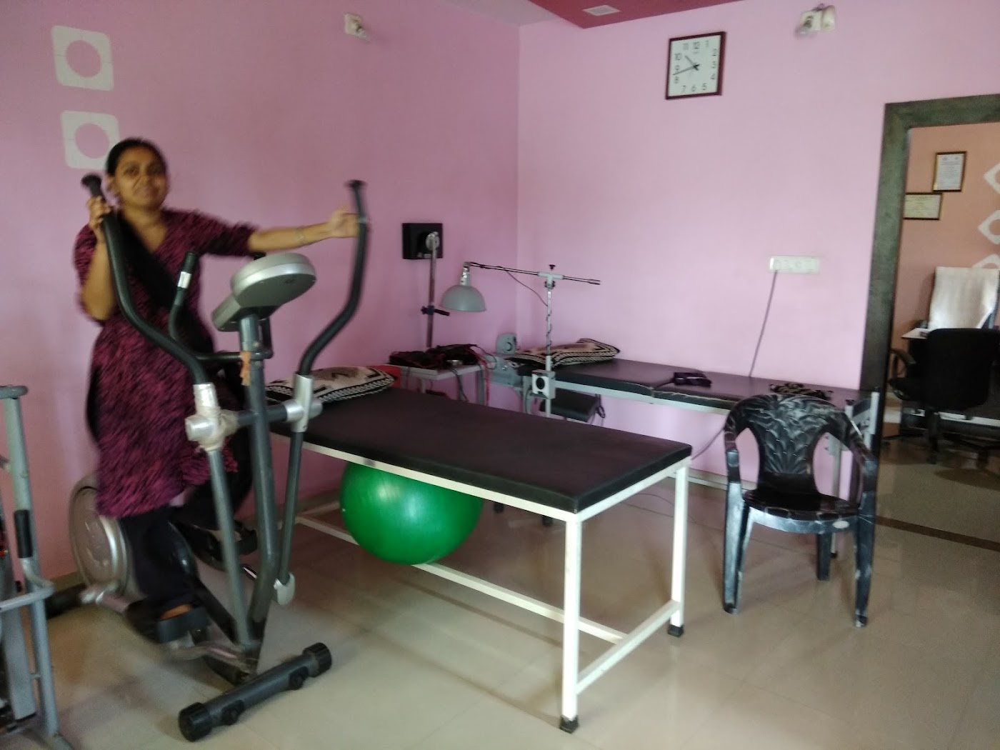
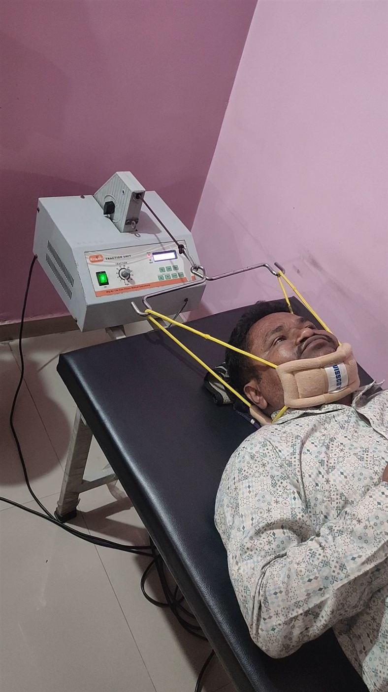
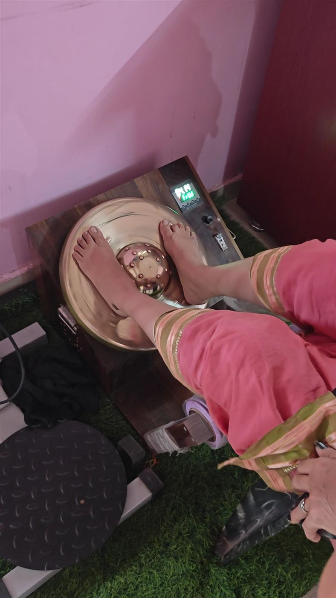
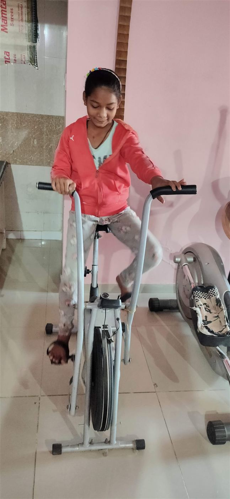
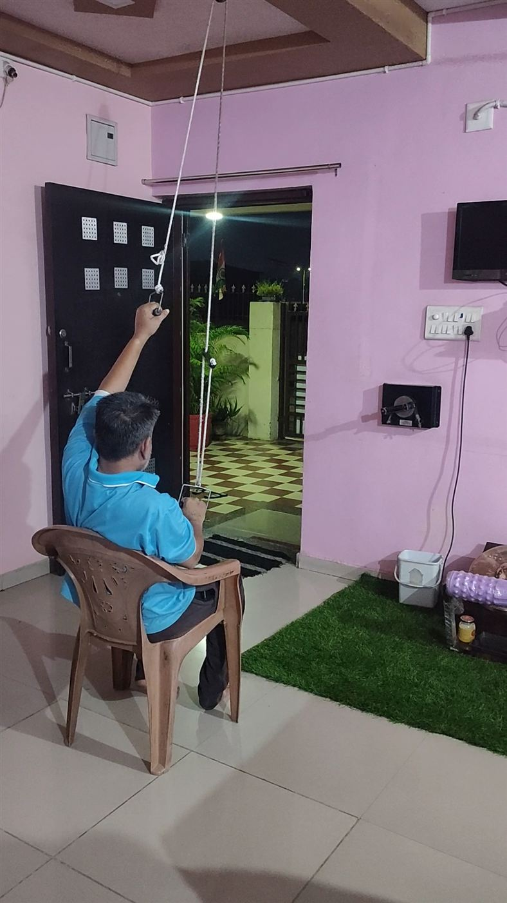
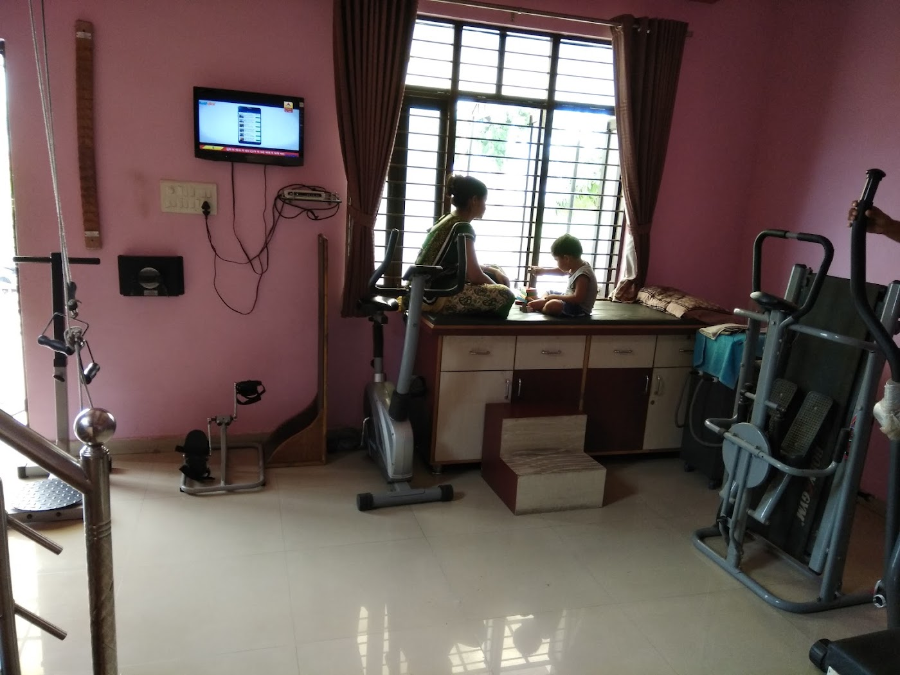
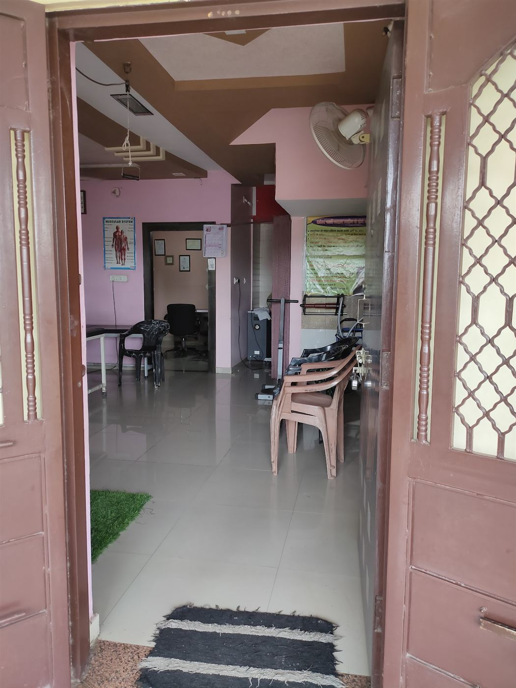
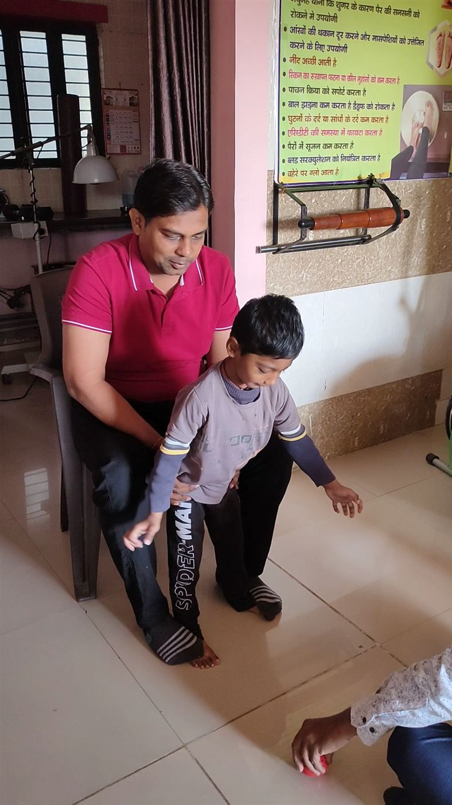
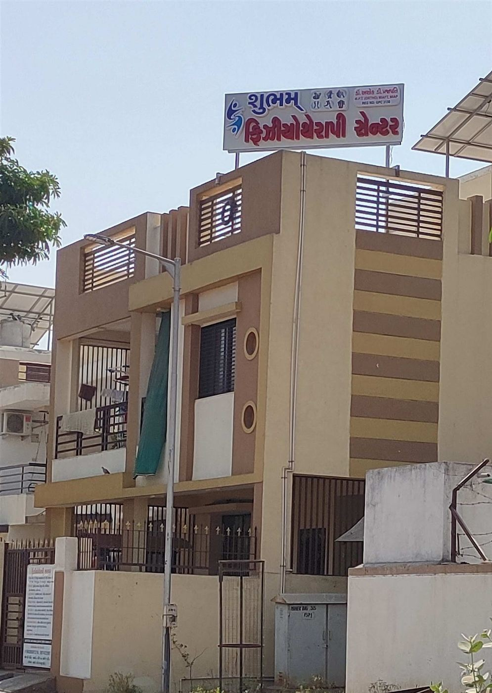

Pain relief that gets you moving again.
Back, neck, shoulder and knee pain, rehab after surgery or a fracture, sports injuries. Dr. Ashok Prajapati finds the root cause and builds a personal exercise plan for you, with advanced machines and manual therapy in a spacious centre in Vastral.

Tap the pain. See how we treat it.
Every problem below is something the clinic treats every week. Tap a point on the body to see the signs, the treatment and a real patient's recovery.
Everything your joints and muscles need.
Manual therapy, advanced machines and exercise programs, planned for one patient at a time.
In their words. From Google reviews.
Patients from Vastral, Odhav and across East Ahmedabad, after treatment at Shubham.
No long waits. Just a clear plan.
Walk in or call ahead. Appointments are easy and you won't wait long.
Assessment
The doctor checks your movement, strength and pain to find the root cause, not just the symptom.
Your plan
A personal exercise program for your joint, your age and your goal, explained clearly.
Treatment
Manual therapy, traction and physiotherapy machines, with exercises guided step by step.
Back to life
Exercises for home, daily-habit tips and follow-ups until you move freely again.
Space to move. Machines that help.
Patients often mention the huge space, the parking and the calm environment. Swipe to look around.








Dr. Ashok D. Prajapati (PT)
Orthopaedic physiotherapist and certified fitness trainer, treating patients of every age at Shubham Physiotherapy, from children to seniors after joint replacement. Patients say he listens, explains everything clearly and guides every exercise himself.
“He is professional, supportive, and attentive to the patient's concerns. He explains the treatment properly and guides patients through the exercises.”Kartik M. · Google review
“He is professional, patient, and takes the time to understand the problem properly.”Ramesh D. · Google review
Can't come to the clinic? We'll come to you.
Home physiotherapy is available, especially for patients after total knee replacement and for elderly family members who find travel difficult.
- Knee replacement rehab
- Elderly patients
- Post-surgery care
- Bed-to-walking recovery
Clinic timings
Daily charges cover consultation and exercise. Call or WhatsApp to know the fees for your treatment.
★★★★★“Visited for shoulder pain, very good treatment and faster resolution. Physio is very nice and explains exercises and stretches very clearly.”
Ronak J. · 2 weeks ago
★★★★★“The clinic is well-maintained, hygienic, and equipped with modern facilities.”
Nishad A. · Google
★★★★★“Best clinic in East Ahmedabad, with peaceful environment, huge parking space.”
Google review
★★★★★“Really good and caring staff. Dr. Ashok Prajapati best treatment for my father, recovery good.”
K. L. Prajapati · Local Guide
Before your first visit
Do I need a doctor's referral?
No. You can walk in or call to book. Bring any X-rays, MRI reports or surgery papers you have so the doctor can plan better.
How many sessions will I need?
It depends on the problem. Patients in our reviews mention recovering from neck pain in 7 sessions and knee pain in 15 sittings, while post-surgery rehab can take a few months. You'll get an honest plan after the assessment.
Can physiotherapy help me avoid surgery?
For many knee and back problems, the right exercises help a lot. One patient with an ACL tear chose physiotherapy over an operation and was walking normally in two months. The doctor will tell you honestly what suits your case.
Do you treat patients after surgery or a fracture?
Yes: knee and hip replacement, shoulder surgery and fracture rehab, including hand, wrist, leg and ankle.
Is the clinic open on Sunday?
Yes, Sunday mornings from 8 AM to 1 PM. Monday to Saturday it's 8 AM–1 PM and 4–9 PM.
Do you come home?
Yes, home visits are available, especially for knee replacement and elderly patients. WhatsApp your address and we'll plan the visit.

See you in Vastral.
- Address
- C-1 Manan Duplex, opp. RM Arcade Complex, Bhatiji Cross Road, Takshshila School Road, Vastral, Ahmedabad 382418શુભમ ફિઝિયોથેરાપી સેન્ટર, વસ્ત્રાલ
- Phone / WhatsApp
- +91 96386 00722 · +91 97142 22897
- ashok.prajapati38@gmail.com